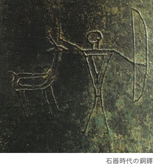
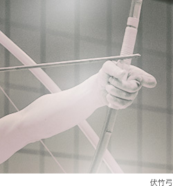
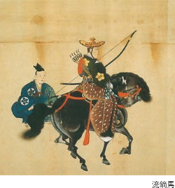
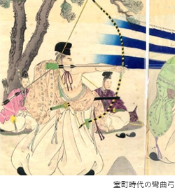
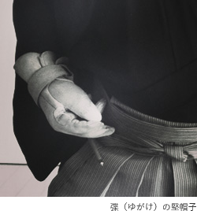

弓道の心
弓道の歴史
世界の弓、日本の弓：旧石器時代末期から、弓術の発達、心身鍛練としての弓、教育の道、未来へ、世界へ。弓道の歴史を時代ごとに紹介します。
世界の弓、日本の弓：旧石器時代末期から
-
手の届かない所を走る、あるいは飛ぶ動物を捕らえて食べるための知惠の形として、世界中で弓は誕生し、旧石器時代末期には中近東アジア地方の民族により使用されていました。
日本でも、石器時代末の製作といわれる銅鐸に描かれた狩猟の絵に、下部に「握り」がある長弓が発見されています。これは、弥生式土器を使った時代と推定され、黒塗りの丸木弓の長弓に樺で隔巻をしてありました。
日本人が長弓を使っていたことは、中国の魏志倭人伝（3世紀前半）にも記録があります。古事記などの思想的、文化的な視点から、弓矢が威儀を示す行装として重い位置を占めていたと考えられ、後に宮中や武家の行事に弓矢の儀式が重視されるようになる要因ともいえるでしょう。

中国文化の影響：4･5世紀以降
-
中国との交流は4・5世紀頃、応神天皇以降ですが、日本文化への影響は多大。弓についての文献も多く、周礼や後漢書、特に礼記（中国、儒教の経書で五経の一つ）の「射義」の思想は日本の弓に大きく影響し、現在の弓道読本の冒頭にも記されています。日本古代からの弓矢の威徳の思想と、中国の弓矢における「射をもって、君子の争いとなす。」という射礼思想礼から、朝廷行事としての射礼の儀が誕生。武家時代には弓矢を通じた礼の思想がうまれ、やがて日本固有の武家思想と結びついていくのです。
平安時代の中頃（10世紀）の伏竹弓（ふせだけゆみ）、平安末期（12世紀）の3枚打などは、中国で合成弓を作る技術を導入。竹と木の合成弓が作られるようになりました。

武家時代：12世紀以降
-
源頼朝が鎌倉幕府を開いた12世紀、弓と馬の修練技術を通じて精神の高みに到達するという武士の道義が確立。武士として、身心の鍛錬および戦闘技術の訓練として犬追物（いぬおうもの：馬に乗り、犬を追いながら弓で射る競技）、笠懸（かさがけ：馬に乗り、遠い距離にセットされた的を射る競技）などが盛んに行なわれたことが、鎌倉時代の歴史書『吾妻鏡』にも記録されています。その時代は巻狩（まきがり）も盛んに行なわれ、平安時代に文射だった弓が、戦闘の弓へと変わっていきました。鎌倉の鶴岡八幡宮で源頼朝が放生会（8月15日）に奉納した流鏑馬（やぶさめ）の歴史は、今に伝承。さらに、犬追物や草鹿（くさじし：草を束ねて鹿の形にして、それを射る訓練）は厳格なルールが設けられ、今日ではスポーツとして形を変えています。

技術の発達：14世紀以降
-
吉野朝動乱から室町時代に至る14世紀、弓術に大きな技術革新が起きました。
後醍醐天皇の時代に、武家社会に伝承された弓法を小笠原貞宗・常興が集大成。弓馬術礼法の基準を確立した小笠原氏は、その後も徳川時代まで将軍家の弓馬術礼法の師範を務めます。また、室町時代の武将、今川了俊は射術の書として「了俊大草紙」に当時の射法を詳細に書き残しました。日置流の祖、日置弾正正次（へきだんじょうまさつぐ）もこの時代の人で、この技法は実践の射として普及。正次の射法はやがて吉田重賢に引継がれ、さらに出雲派・雪荷派が分派。雪荷から道雪が分派し、出雲派から印西派、大蔵派などが分派しながら、多くの俊才によって弓技は急速に進歩を重ねます。
さらに、竹林坊如成（ちくりんぼうなおしげ）によって竹林派が成立し、その後の尾張・紀州に定着して発展。このように15世紀から17世紀、室町末から徳川初期にかけての150年の間に、多くの流派が派生しています。
その後、江戸時代の元禄の頃に森川香山による大和流、明治時代に本多利実が本多流を創始しました。
この時代の弓術の技術革新は、室町時代に京都所司代を務めた多賀豊後守高忠による武術書「高忠聞書」に弓返りの射法の得失が書かれ、竹木合成の彎曲弓による技術の工夫を示す記述があります。

心身鍛練としての弓
-
織田と豊臣の16世紀、鉄砲の伝来により戦闘具としての弓の時代は終焉。弓術の目的は心身鍛練となることで、技法が次第に精妙になっていきます。
その一つが通し矢。起源は12世紀平安時代末期の保元の乱の頃で、16世紀末安土桃山時代に盛んになりました。1606（慶長11）年に京都三十三間堂で100本中51本を射通した朝岡平兵衛、1661-88（寛文・貞享）年には8,000本を越えた星野勘左衛門、24時間の規程時間内に13,053本を射て8,133本を射通した和佐大八郎の記録が残っています。通し矢は速射が必要で、打切りの射法。この時に工夫された弽（ゆがけ）の堅帽子が現在の堅帽子へと進化していきました。

幕末から明治へ
-
平和の続く江戸時代、弓は「術」として「道」として研修され、心身鍛練の弓道を確立。一方、洋式調練と鉄砲時代の幕末に、江戸幕府が武術を教える講武所が弓術は実戦的でないという理由で除外します。しかし、鉄砲は下級武士の仕事であると考える武士が、弓馬の稽古を盛んに行なっていたことも事実でした。
その後1895(明治28)年、古武道の保存と奨励を目的として京都に創立された大日本武徳会には弓道も含まれ、奨励されるようになります。
教育の道、未来へ、世界へ
-
大正、昭和の時代、弓道は中等学校以上の学校教育として正課やクラブ活動に採用。その後も1941(昭和16)年、文部省による体練科武道として再び実戦と直結する方向に導かれましたが、1945(昭和20)年11月に武道の授業は禁止となりました。
1951(昭和26)年7月、文部次官通牒により学校における弓道の実施が許可されます。さらに1967(昭和42)年、体育局長通達によって高等学校における弓道の正科を採択。弓道は新しい意味における教育的意義、体育的意義が認められて、学校体育として発足することとなりました。
今後は、近代科学の新しい研究と新しい武道理念のもとに、教育においての意義づけを深めると同時に、新しい弓の世界を開拓・普及していくことが求められています。そのためにも世界交流の場で発信するなど、伝統文化としての弓道をより多くの人に知っていただける努力を続けています。